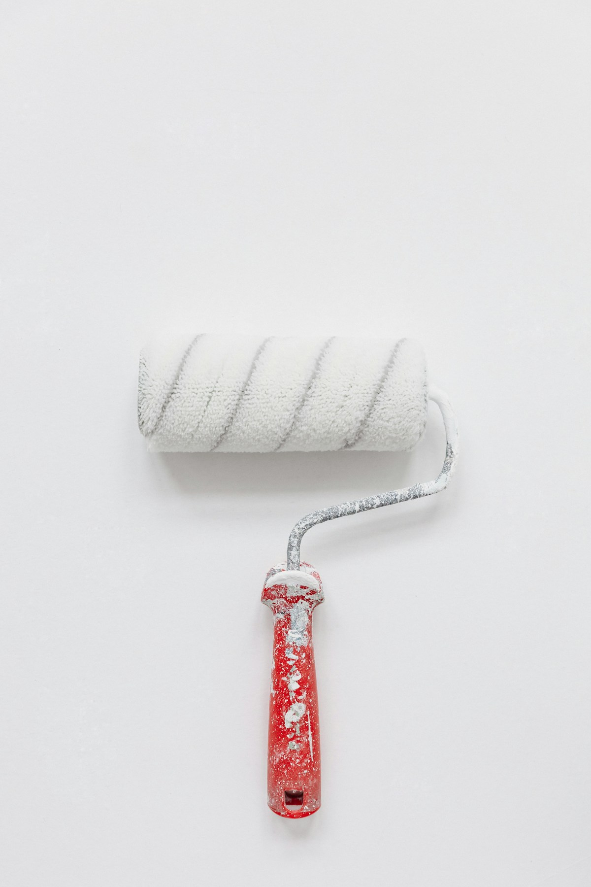

Malerarbeiten · Hamburg · seit 2002
Sauber gestrichen. Zum Festpreis.
Innenanstriche, Tapezieren, Fassaden — Mehmet Sert besichtigt jeden Auftrag persönlich und macht ein schriftliches Angebot. Kein Stundensatz, keine Überraschungen.
Besichtigung
Kostenloser Vor-Ort-Termin
Kein Risiko, kein Auftragsdruck — wir schauen erst an, dann entscheiden Sie.
Preisgarantie
Schriftlicher Festpreis
Kein Stundensatz. Der vereinbarte Preis gilt — ohne Nachkalkulation.
Was wir machen
Vom Deckenanstrich bis zur Fassade.
Alles rund um Farbe, Anstrich und Tapete — aus einer Hand, ein Ansprechpartner. Bei Schimmelbefall starten wir mit der Schimmel-Sanierung, bei Umbauten übernehmen wir auch den Trockenbau.
Innenanstriche
- Wände und Decken (ein- oder mehrlagig)
- Türen, Fensterrahmen, Heizkörper
- Treppenhaus und Gemeinschaftsflächen
- Keller und Tiefgarage
Tapezieren
- Vlies- und Raufasertapeten
- Designtapeten und Mustertapeten
- Alte Tapete entfernen, Untergrund glätten
- Strukturtapeten und Glasvlies
Fassaden & Außenanstriche
- Fassadenanstriche und Putzreparaturen
- Balkone, Garagen, Carports
- Holzverkleidungen und Fensterläden
- Grundierung und Tiefenprimer
Holz, Lack & Lasur
- Holzböden ölen und versiegeln
- Treppen lackieren oder lasieren
- Möbel und Einbauten lackieren
- Rostschutz auf Stahl und Metall
Preise
Klar kalkuliert, schriftlich bestätigt.
Für Standardstreicharbeiten gibt es feste Quadratmeterpreise — für alles andere ein Festpreisangebot nach Besichtigung.
Alle Preise netto, zzgl. MwSt. Für Tapezierarbeiten, Fassaden und Sonderfarben erhalten Sie nach dem kostenlosen Vor-Ort-Termin ein schriftliches Festpreisangebot.
Ablauf
Einfach, verlässlich, ohne Umwege.
-
Anrufen oder schreiben
Kurz beschreiben, was ansteht. Meldung innerhalb eines Werktags.
-
Kostenloser Vor-Ort-Termin
Mehmet Sert kommt persönlich, berät zu Farbe und Material, nimmt Maß.
-
Schriftliches Festpreisangebot
Klares Angebot per m² oder Festpreis — Zustimmung → Termin → los.
FAQ
Häufige Fragen zu Malerarbeiten in Hamburg.
Was kostet Streichen in Hamburg?
Wände zweimal streichen (weiß) kostet bei uns ab 8,10 € pro m², Decken ab 9,10 € pro m² (netto). Für Tapezierarbeiten, Fassaden und Sonderfarben gibt es nach einem kostenlosen Vor-Ort-Termin ein schriftliches Festpreisangebot.
Wie lange dauert es, eine 3-Zimmer-Wohnung zu streichen?
Eine normale 3-Zimmer-Wohnung (~70 m²) ist in 2–3 Werktagen fertig gestrichen — je nach Wandzustand, Anzahl der Anstriche und ob Tapezierarbeiten dazukommen.
Streichen Sie auch Fassaden in Hamburg?
Ja, wir machen Fassadenanstriche, Balkone und Garagen in Hamburg und Umland, inklusive Putzreparaturen und Grundierung. Den Preis ermitteln wir nach Besichtigung als schriftliches Festpreisangebot.
Müssen wir die Möbel selbst ausräumen?
Wir decken Böden und Möbel sorgfältig ab. Großmöbel schützen wir an Ort und Stelle. Was umgestellt werden sollte, besprechen wir beim kostenlosen Vor-Ort-Termin.
Welche Farben und Materialien verwenden Sie?
Wir arbeiten mit Markenprodukten von Alpina, Caparol und Dulux. Eigene Wunschfarben und RAL-Töne sind kein Problem. Alles besprechen wir beim Vor-Ort-Termin.
Kostenlos anfragen
Vor-Ort-Termin vereinbaren.
Wir schauen uns alles an und machen ein schriftliches Festpreisangebot — ohne Druck, ohne Stundensatz.